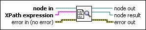

Get First Matched Node VI
Owning Palette: XML Parser VIs and Nodes
Requires: Base Development System
Returns the first node within node in that matches the XPath expression. If this VI does not find a match, node result is not a valid refnum.

 Add to the block diagram Add to the block diagram |
 Find on the palette Find on the palette |